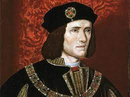
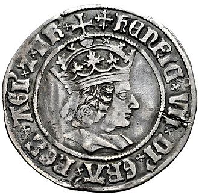

The Tudor's
back

King Henry VII
Reign: 1485 - 1509
Key Facts.
Birth: 28th Jan 1457, Pembroke Castle.
Father: Edmond Tudor, 1st Earl of Richmond
Mother: Margaret Beaufort
Accession: 22nd Aug 1485
Coronation: 30th Oct 1485
Queen: Elizabeth of York (m.18th Jan 1486; d.1503)
Succeeded by: His son Henry VIII
Greatest Achievement: Establishing the House of Tudor
Key Dates.
16th June 1487: Defeats and captures Pretender Lambert Simmel.
October 1497: Captures Pretender Perkins Warbeck.
1497: Cornishmen revolt over taxes and march on London.
14th November 1501: Prince Arthur marries Catherine of Aragon.
8th August 1503: King James IV of Scots weds Henry's daughter, Margaret Tudor.
Death: 21st April 1509, Richmond Palace, Surrey.
Wikipedia Link
Groat (coin) of Henry VII
